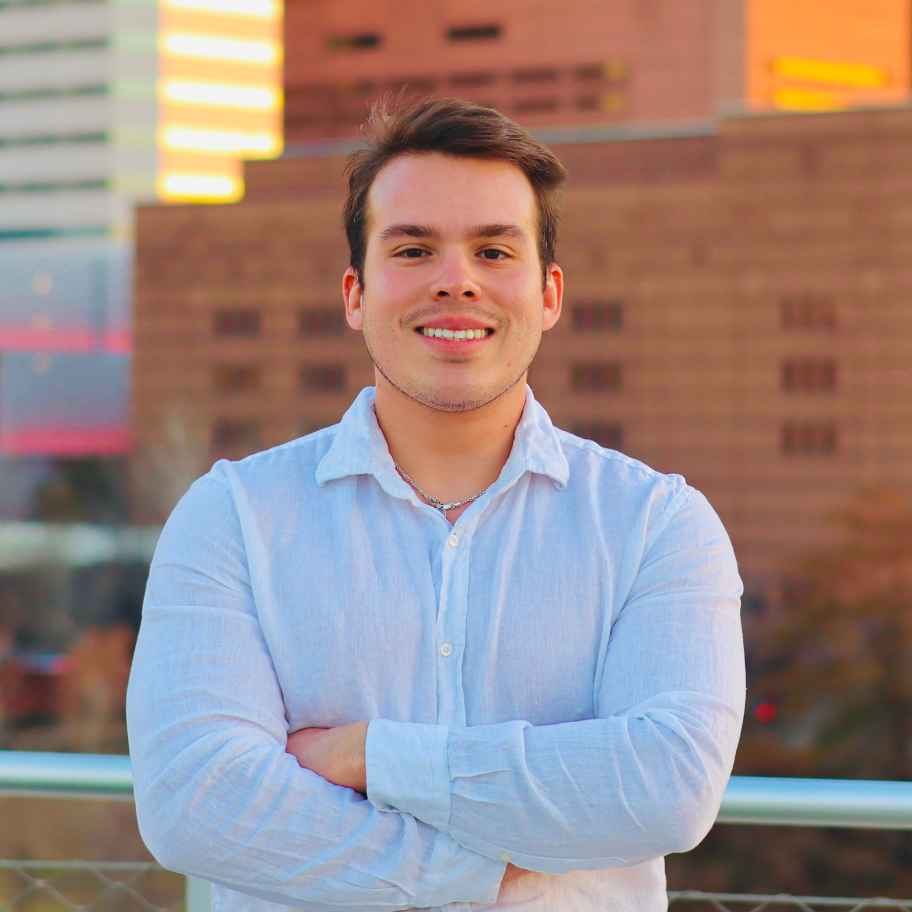

Fueling Your Day, One Cup at a Time!
Here are the specials for each day of the week:
Our Mission: At Roast Republic, we’re on a mission to fuel creativity, community, and connection with every cup of coffee. We craft bold, artisanal brews from the finest beans around the world, celebrating the journey from farm to cup. Whether you’re here for a quick pick-me-up or to unwind with friends, our goal is to create a space where every sip sparks inspiration.
Our Vision Our vision is to be the heartbeat of the neighborhood, where people from all walks of life come together to enjoy exceptional coffee, share stories, and spark ideas. We aim to build a brand that not only serves delicious coffee but also nurtures meaningful connections and a sense of belonging, all while supporting sustainable and ethical coffee-growing practices around the globe.
Our Culture At Roast Republic, we embrace a culture of creativity, inclusivity, and passion. We believe in empowering our team to bring their unique flavors to the table, whether it’s through innovative drinks, exciting events, or fostering a welcoming environment for everyone who walks through our doors. We’re more than just a coffee shop—we’re a community that celebrates diversity, encourages growth, and values the art of coffee-making as much as we value the people who enjoy it.
About our Founder
Victor Ulloa founded Roast Republic Coffee Shop with one simple mission: to craft a coffee experience that’s as bold and unique as the people who drink it. A true coffee enthusiast, Victor is obsessed with every detail—from selecting the finest beans to perfecting the balance of flavors in every cup. His goal was to create a place where every brew tells a story and sparks creativity. At Roast Republic, coffee isn’t just a drink; it’s an art form, meant to bring people together and ignite conversations. When he’s not brewing up new blends, Victor enjoys exploring the outdoors and capturing life through photography.